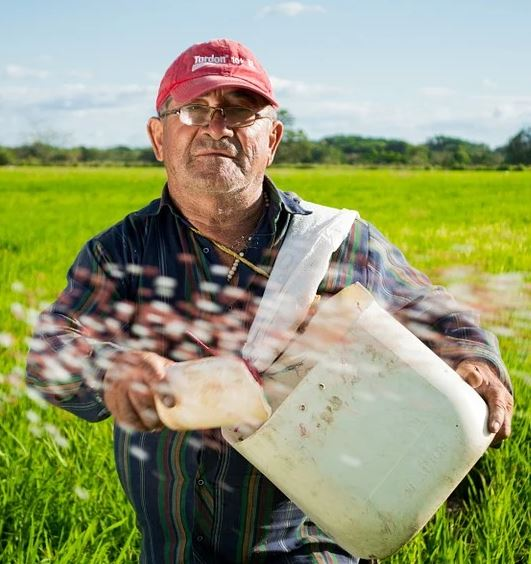

L'association Combava vous propose une dégustation jus de ces
meilleurs producteurs d'agrumes du Sud de la France. Combava
lance pour vous, l'opération David's Limonade. Mais qu'est
ce qu'est David's Limonade? Venez avec nous, remontons le
temps jusque dans les 50's.
Depuis le siècle dernier la
limonade rapproche. Il n'était pas rare de voir fleurir, en
été, un stand de vente de limonade fraiche, pas chère, tenu
par un ou plusieurs enfants. Ces stands de quartier permettaient
aux jeunes américains de se faire un peu d'argent de poche ou
de faire une collecte de fond pour un événement dans leur école.
Une boisson fraiche en pleine été, quelle bonne idée! La pratique
se démocratise et une entreprise David's Limonade repris l'idée.
Aujourd'hui, ce nom représente ces stands de boissons fraiches, la
simplicité et la générosité.
Aujourd'hui, 70 ans plus tard, notre association met en avant les producteurs locaux proposants
des produits frais issus d'une culture biologique ou biodynamique. Pour ces producteurs Combava c'est
plus qu'une simple association.
Notre recette du moment
Nos Producteurs

Philippe 63ans,
Philippe est producteur d'argumes depuis plus de 40 ans. Son savoir faire
explique une qualité de produit supérieur. Il dispose de plus de 2,5
hectares de terrain sur lesquels sont plantés plus de 650 arbres fruitiers
dont 30% sont des citronniers. Philippe priviligie depuis 15ans
l'agriculture biodynamique. "L'association Combava m'a permis de
developper une production biologique, puis biodynamique"
Nos événements
-
AMAP les Grand’Goules - Poitiers
Vous êtes invités à la dégustation dès 14h afin de pouvoir profiter des produits de nos producteurs et d’en discuter de façon conviviale. Evenement le 15 fevrier 2021
-
AMAP Bio des 2 rives - Civray-de-Touraine
Vous êtes conviés à une dégustation où vous pourrez par ailleurs discuter avec les producteurs locaux. Evenement le 25 fevrier 2021, On compte sur vous!
-
AMAP des Voiliers - La Rochelle
Venez nous rejoindre lors d'une dégustation afin de découvrir les produits de nos producteurs locaux. Evenement le 05 mars 2021. Nous entendons plus que vous!
-
Le Pompin'Ambour - Pompignac
Vous pourrez retrouver nos produits lors de cette dégustation en VIP gratuite et avec nos producteurs locaux. Evenement le 15 mars 2021
-
AMAP BIO’RILLAC - Arpajon-sur-Cère
Venez profiter des produits bio de nos producteurs partenaire lors de cette dégustation ainsi que des échanges avec ces derniers. Evenement le 25 mars 2021
-
AMAP - Maringues
Vous êtes invités à la dégustation dès 14h afin de pouvoir profiter des produits de nos producteurs et d’en discuter de façon conviviale. Evenement le 05 avril 2021
-
Pensees Bio - Biars-sur-Cère
Vous êtes conviés à une dégustation où vous pourrez par ailleurs discuter avec les producteurs locaux. Evenement le 15 avril 2021. On compte sur vous!
-
Bio & Sens Montpellier - Juvignac
Venez nous rejoindre lors d'une dégustation afin de découvrir les produits de nos producteurs locaux. Evenement le 25 avril 2021. Nous entendons plus que vous!
-
Biossetan - Le Beausset
Vous pourrez retrouver nos produits lors de cette dégustation en VIP gratuite et avec nos producteurs locaux. Evenement le 05 mai 2021
-
La Canopée - Besançon
Vous êtes invités à la dégustation dès 14h afin de pouvoir profiter des produits de nos producteurs et d’en discuter de façon conviviale. Evenement le 15 mai 2021
-
Naturéo - Wintzenheim
Vous pourrez retrouver nos produits lors de cette dégustation en VIP gratuite et avec nos producteurs locaux. Evenement le 25 mai 2021
-
Rayons Verts - Charleville-Mézières
Vous êtes conviés à une dégustation où vous pourrez par ailleurs discuter avec les producteurs locaux. Evenement le 05 juin 2021. On compte sur vous!
-
BIOMONDE - Amiens
Venez nous rejoindre lors d'une dégustation afin de découvrir les produits de nos producteurs locaux. Evenement le 15 juin 2021. Nous entendons plus que vous!
-
Bio c' Bon - Paris
Vous êtes invités à la dégustation dès 14h afin de pouvoir profiter des produits de nos producteurs et d’en discuter de façon conviviale. Evenement le 25 juin 2021
-
Les Comptoirs de la Bio - Auxerre
Vous pourrez retrouver nos produits lors de cette dégustation en VIP gratuite et avec nos producteurs locaux. Evenement le 05 juillet 2021
| Dates et lieux des événements (adresses des evenements vous seront communiqués par courriel) |
|
|---|---|
| 15/02 | AMAP les Grand’Goules - Poitiers |
| 25/02 | AMAP Bio des 2 rives - Civray-de-Touraine |
| 05/03 | AMAP des Voiliers - La Rochelle |
| 15/03 | Le Pompin'Ambour - Pompignac |
| 25/03 | AMAP BIO’RILLAC - Arpajon-sur-Cère |
| 05/04 | AMAP - Maringues |
| 15/04 | Pensees Bio - Biars-sur-Cère |
| 25/04 | Bio & Sens Montpellier - Juvignac |
| 05/05 | Biossetan - Le Beausset |
| 15/05 | La Canopée - Besançon |
| 25/05 | Naturéo - Wintzenheim |
| 05/06 | Rayons Verts - Charleville-Mézières |
| 15/06 | BIOMONDE - Amiens |
| 25/06 | Bio c' Bon - Paris |
| 05/07 | Les Comptoirs de la Bio - Auxerre |